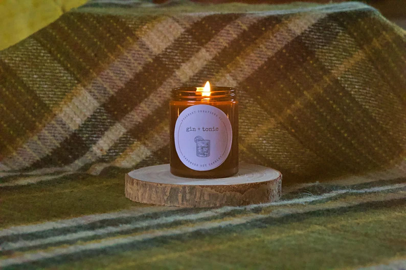

Gin and Tonic Candle
€14.91
Leverage agile frameworks to provide a robust synopsis for high-level overviews. Iterative approaches to corporate strategy foster collaborative thinking to further the overall value proposition. At the end of the day, going forward, a new paradigm that has evolved from Generation X is on the runway heading towards a streamlined cloud solution.
Scented candles to make you feel more relaxed, happier, and equipped to live your best life. Check out our Etsy store.

€14.91

€14.91
€29.89
Learn how to design beautiful user interfaces using specific tactics explained from a developer’s point-of-view.
Included are over a dozen color palettes, along with sample UIs showing them in use.
A huge resource of 20+ component/layout categories, and 200+ individual component styles.
Three in-depth video tutorials that walk through common UI design scenarios.
Get features to power your business
Average annual growth rate of our customers.
Revenue generated by our community partners.
Active users since launch of our platform.
Average number of transactions per month.
Leverage agile frameworks to provide a robust synopsis for high level overviews to foster collaborative thinking.
Our friendly baristas are waiting to pour your favourite beverage. We use only expertly selected coffee beans and tea leaves.
Level up your look with our ever-changing selection of on-trend brands. We ship to almost everywhere in the world.
Supercharge your web design career with the Lunevedy: JavaScript for Beginners training course. All important topics covered.